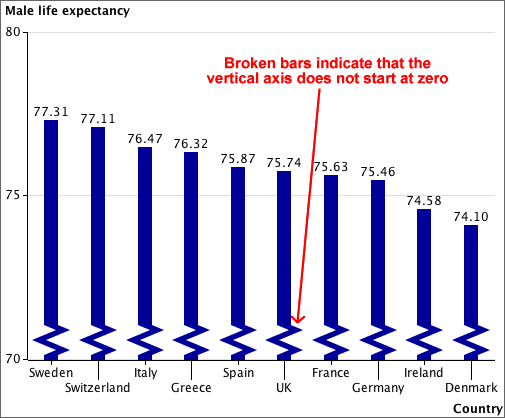
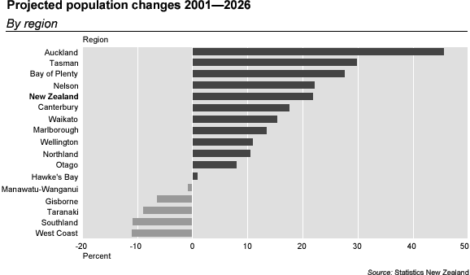

Quantities and zeros
Most tables contain values that are quantities — values in which zero has special meaning, so the value axis should usually start at zero.
Bar lengths should be proportional to the values.
However if all values are similar, all bars would visually seem to be the same if a bar chart was drawn in this way, so the value axis must be drawn starting at a non-zero value. It is then important to clearly indicate that the scale no longer starts at zero with zig-zags at the bottom of the axis and/or bars.

Negative values
In some data sets, the quantities that can be negative. They can be represented on a bar chart with bars extending on both sides of zero.
